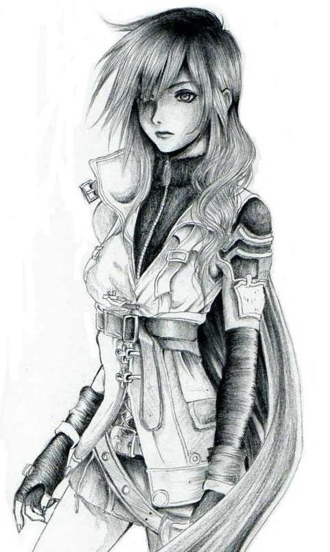
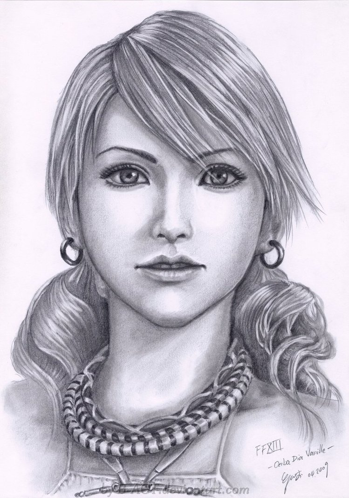

Válogatott karakterképek:
 A Shadowrun a cyberpunk és a fantasy stílusjegyeket egyesíti, és a nem túl távoli jövőben játszódik. Az 1989-es első kiadás a 2050-es évekkel kezdte, majd az újabb kiadásokkal ez folyamatosan haladt előre. Az idén megjelent 6. kiadás már 2079-nél tart.
A technológia eljutott arra a szintre, hogy a mesterséges testrészek, azaz a kiberverek, vagy azok modernebb, “emberközelibb” változatai, a tartályokban tenyésztett bioverek már a mindennapok részei. Olyan az életet megkönnyítő hétköznapi eszközök ezek, mint egy csavarhúzó, vagy akár olyan divattermékek, mint egy napszemüveg. A leggazdagabbak már a nanotechnológia és a génmanipuláció vívmányainak előnyeit is kiélvezhetik.
Forrás: